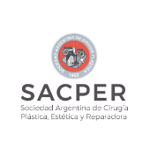
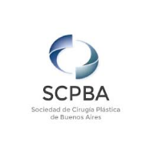
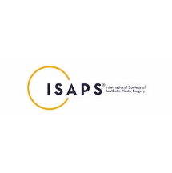
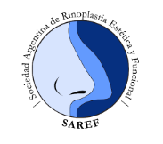
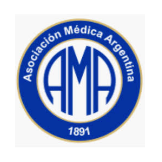
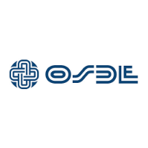

La autoimagen, la forma en que te percibes a ti mismo y tu opinión sobre quién y cómo eres; es
una de las claves de la personalidad y de la conducta humana. Quien cambie la autoimagen,
transformará también su estilo y proceder. Pero hay más aún. El auto concepto determina y fija
las fronteras de la consecución individual; muchas veces define al individuo lo que éste puede y
lo que no puede hacer. Define su zona de lo “posible”.
En este sentido, como médica y cirujana, me considero un recurso a través del cual mis
pacientes acceden a acortar la brecha entre lo que sienten y cómo desean sentirse. Mi
concepto de belleza propone lograr la mayor armonía posible entre las diferentes partes del
cuerpo, entre el rostro y el cuerpo, también entre la anatomía y la psicología, entre el cuerpo y
el alma.
Gestiono con profesionalidad y compromiso los pedidos de mis pacientes, entendiendo que
luego de la consulta, ambos emprenderemos un camino de cambio. Apuesto por un resultado
de excelencia, no como un fin en sí mismo, sino como un medio para un renovación integral.
Concibo que la modificación de las formas no se limita a la superficie de la piel, la belleza
también implica un requisito interior. Comprendo que la persona que asiste a la consulta
médica, lo hace movilizado por una incomodidad que ya no puede ser sostenida, buscando una
orientación en su proceso de liberarse de dicho pendiente consigo misma. Mi satisfacción se
basa en formar parte del proceso de cambio de alguien más que acude a mi persona.
Conozco a mis pacientes a través de una consulta inicial, historia clínica y examen físico
focalizado en su motivo de interés. Generando el ámbito propicio para que puedan sentirse
seguros al compartir sus inquietudes. Reconozco qué es lo que verdaderamente solicitan
quienes acuden a mi y procuro construir una relación médico-paciente sólida, y de estrecha
comunicación. Dispongo, además, de un equipo médico multidisciplinario para acondicionar a
mi paciente en condiciones óptimas pre quirúrgicas si es que así lo requiriera.
A partir de ese punto, puedo realizar una indicación certera en cuanto a diagnóstico, técnicas a
utilizar, procedimientos alternativos, confección de un plan médico y plan quirúrgico
personalizado. Tengo certeza que mis pacientes pueden transitar estos procedimientos, tanto
cosméticos y/o reconstructivos, como una experiencia agradable que los impulse a permanecer
en la travesía de reencontrarse con quien están dispuestos a ser hoy.





